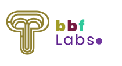

You don't have access to the page
Have an Auth key?
Enter it
Choose a username
A username is required to access anything on the page
Start Quiz
See Q & A
Select Lectures
Start Quiz
Scores
Back
Retake
DCIT 208 Mock Quiz: A BBF Labs Initiative
View Scores
Back
Save
Next
Q & A
Submit
Lectures
Reset Quiz
Back to Quiz
Next
Retake Quiz
Show feedback?
Yes
No